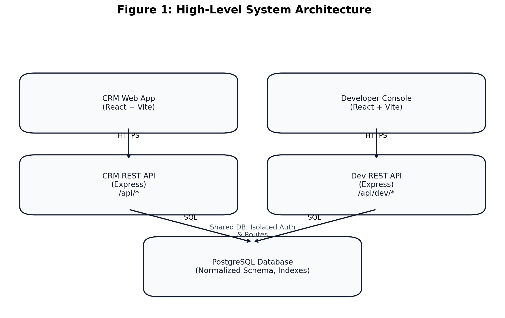
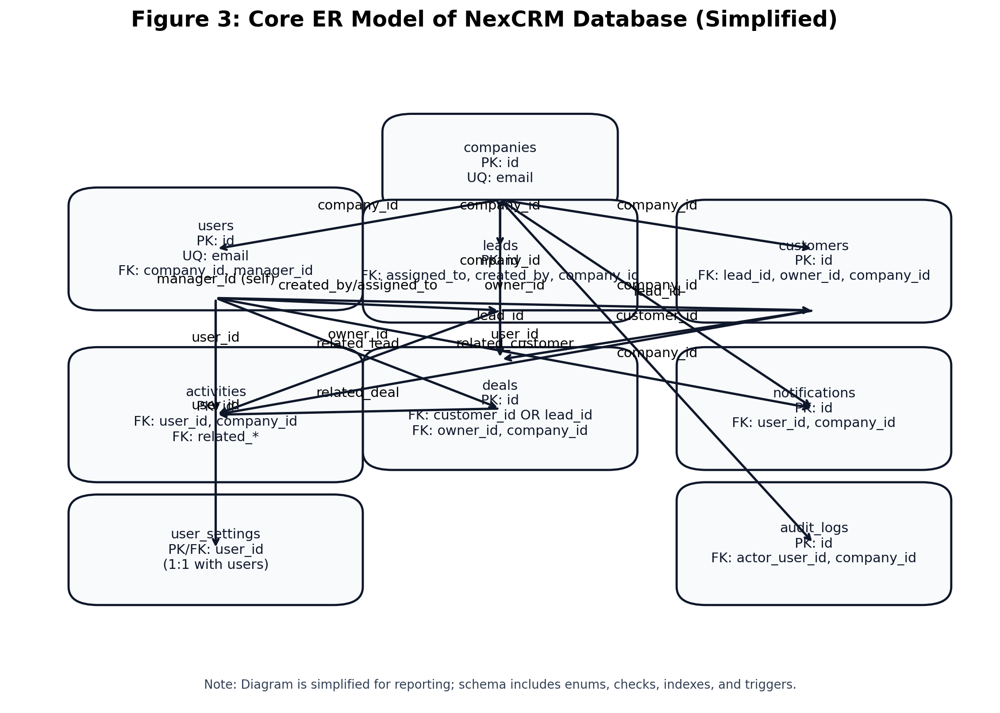
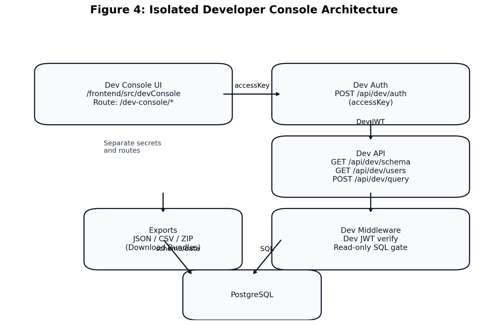
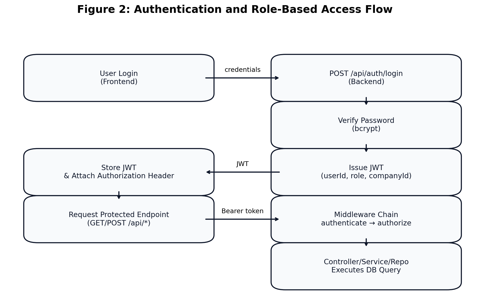
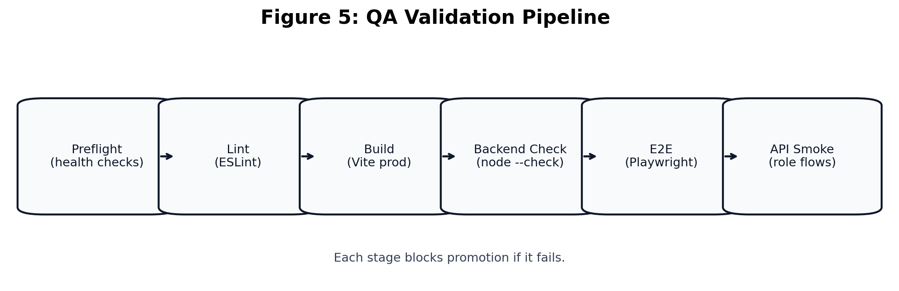
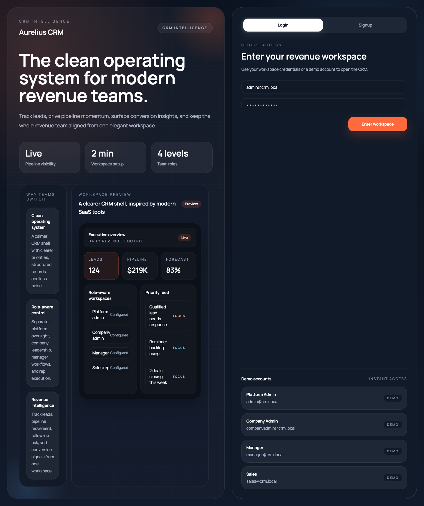
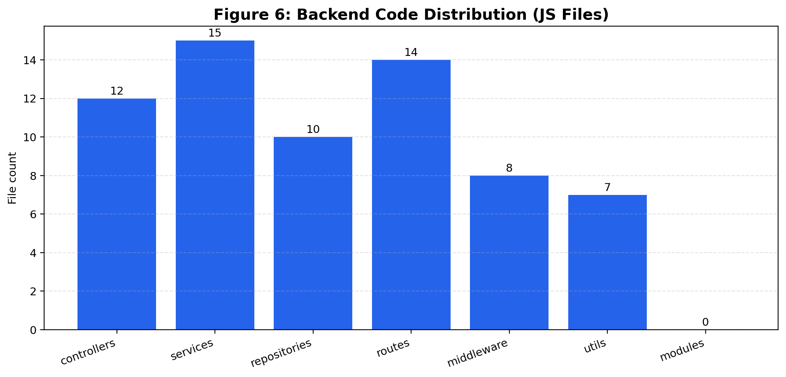
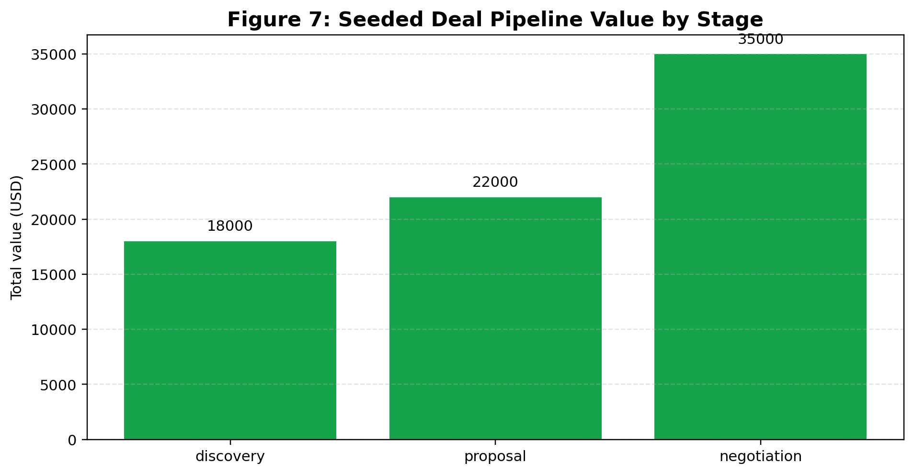

PROJECT REPORT
Submitted under Database Management Course (CIC-210)
OF
BACHELOR OF TECHNOLOGY
IN
COMPUTER SCIENCE AND ENGINEERING
Submitted By
[Student Name] - [Roll Number]
[Student Name] - [Roll Number]
4th Semester, C-Section
Under the Supervision of
Dr. Monika Bansal
VIVEKANANDA INSTITUTE OF PROFESSIONAL STUDIES - TECHNICAL CAMPUS
Grade A++ Accredited Institution by NAAC
NBA Accredited for MCA Programme
Affiliated to GGSIP University, Delhi
An ISO 9001:2015 Certified Institution
Session: 2024-2028
Figure 1: High-Level System Architecture
Figure 2: Authentication and Role-Based Access Flow
Figure 3: Core ER Model of NexCRM Database (Simplified)
Figure 4: Isolated Developer Console Architecture
Figure 5: QA Validation Pipeline
Figure 6: Backend Code Distribution (JS Files)
Figure 7: Seeded Deal Pipeline Value by Stage
Figure 8: NexCRM UI Screenshot (Login and Demo Accounts)
Table 1: Hardware and Software Requirements ................................... iii
Table 2: Core Entity Attributes ............................................... iii
Table 3: Normalization Summary (1NF to 3NF) ................................... iv
Table 4: QA Results and Verification Matrix .................................... iv
Abstract
Chapter 1: Introduction
Chapter 2: Related Work
Chapter 3: Problem Statement and Objectives
Chapter 4: Project Analysis and Design
4.1 Hardware and Software Requirement Specifications
4.2 ER Diagrams
4.3 Table Creation Scripts and Database Schema
4.4 Normalization (up to 3NF)
4.5 Sample Data
Chapter 5: Work and Methodology
Chapter 6: Results and Discussion
Chapter 7: Conclusion
Chapter 8: Future Scope of Work
References
Coding
NexCRM is a full-stack Customer Relationship Management (CRM) platform developed for structured sales execution, customer lifecycle tracking, and analytics-driven decision-making. The project implements a PostgreSQL-backed data model, an Express REST API, and a React frontend dashboard. Core modules include authentication and role-based access control, lead management, customer conversion, deal pipeline tracking, activity scheduling, notifications, and analytics.
The system also includes an isolated Developer Console with dedicated authentication, schema exploration, relationship visualization, read-only SQL query capabilities, downloadable schema documentation (JSON/CSV/ZIP), and a secure signed-up users directory that excludes password data. The final implementation follows database normalization principles up to Third Normal Form (3NF), supports multi-tenant company workspaces, and was validated through linting, production build verification, backend checks, API smoke tests, and browser automation.
Customer-facing organizations require an integrated system to capture prospects, nurture opportunities, convert leads, and analyze sales performance. Many teams rely on disconnected tools, resulting in duplicated data, inconsistent updates, weak auditability, and delayed reporting. NexCRM addresses these issues through a centralized database design and a modular web application architecture.
This project was built as part of the Database Management course with a strong focus on schema quality, referential integrity, indexing strategy, and practical normalization. The platform provides role-specific workflows for platform administrators, company administrators, managers, and sales representatives while maintaining secure data boundaries.
The key motivation was to design and implement a realistic DBMS-backed application where theoretical concepts such as entity relationships, constraints, normalization, and query optimization are applied in production-like scenarios.
The scope includes data modeling, API development, frontend implementation, testing, and deployment readiness checks. It excludes payment gateway integrations and external CRM synchronization in the current phase.
The system follows a 3-tier web architecture. The CRM application and the isolated Developer Console are separate frontend entry points that communicate with backend routes over HTTPS while sharing a single PostgreSQL database.

Figure 1: High-Level System Architecture
Existing CRM systems such as Salesforce, HubSpot, and Zoho CRM provide robust enterprise capabilities but are often complex and expensive for learning-focused or small-team contexts. Academic prototypes typically demonstrate basic CRUD operations but rarely include strong role controls, analytics, and operational observability.
NexCRM combines practical usability and rigorous database design. Unlike basic prototypes, it includes: (a) multi-tenant company segmentation, (b) audit-log support, (c) user settings persistence, (d) quality assurance scripts, and (e) an isolated developer database console for controlled introspection.
Design and implement a reliable CRM system where sales and customer lifecycle operations can be handled through a normalized relational schema and role-aware application layer, while ensuring performance, security, and maintainability.
| Category | Requirement |
|---|---|
| Processor | Intel/AMD dual-core or above |
| RAM | Minimum 8 GB (16 GB recommended) |
| Storage | At least 2 GB free space |
| Operating System | Windows 10+/macOS/Linux |
| Runtime | Node.js 20+, npm |
| Database | PostgreSQL 14+ |
| Frontend Stack | React, Vite, Tailwind CSS, Redux Toolkit, Axios, Recharts |
| Backend Stack | Node.js, Express, pg, jsonwebtoken, bcrypt, dotenv |
| Testing | ESLint, Playwright, custom QA scripts |
Figure 3 represents a simplified ER model of the NexCRM database. Primary entities include users, companies, leads, customers, deals, activities, notifications, audit_logs, and user_settings. Key relationships are summarized below.

Figure 3: Core ER Model of NexCRM Database (Simplified)
The schema was created through versioned SQL migrations: 001_init_crm_schema.sql, 002_seed_dev_data.sql, 003_multitenant_workspace.sql, 004_seed_company_hierarchy.sql, 005_audit_logs.sql, 006_audit_retention_and_indexes.sql, and 007_user_settings.sql.
CREATE TABLE IF NOT EXISTS users ( id BIGSERIAL PRIMARY KEY, full_name VARCHAR(120) NOT NULL, email CITEXT NOT NULL UNIQUE, password_hash TEXT NOT NULL, role user_role_enum NOT NULL DEFAULT 'sales_rep', is_active BOOLEAN NOT NULL DEFAULT TRUE, created_at TIMESTAMPTZ NOT NULL DEFAULT NOW(), updated_at TIMESTAMPTZ NOT NULL DEFAULT NOW() ); CREATE TABLE IF NOT EXISTS deals ( id BIGSERIAL PRIMARY KEY, title VARCHAR(180) NOT NULL, customer_id BIGINT REFERENCES customers(id) ON DELETE SET NULL, lead_id BIGINT REFERENCES leads(id) ON DELETE SET NULL, owner_id BIGINT REFERENCES users(id) ON DELETE SET NULL, stage deal_stage_enum NOT NULL DEFAULT 'discovery', status deal_status_enum NOT NULL DEFAULT 'open', value NUMERIC(12, 2) NOT NULL DEFAULT 0 CHECK (value >= 0), probability NUMERIC(5, 2) NOT NULL DEFAULT 0 CHECK (probability BETWEEN 0 AND 100) );
ALTER TABLE users ADD COLUMN IF NOT EXISTS platform_role platform_role_enum, ADD COLUMN IF NOT EXISTS company_id BIGINT REFERENCES companies(id) ON DELETE SET NULL, ADD COLUMN IF NOT EXISTS company_role company_role_enum, ADD COLUMN IF NOT EXISTS manager_id BIGINT REFERENCES users(id) ON DELETE SET NULL; ALTER TABLE leads ADD COLUMN IF NOT EXISTS company_id BIGINT REFERENCES companies(id) ON DELETE CASCADE; ALTER TABLE customers ADD COLUMN IF NOT EXISTS company_id BIGINT REFERENCES companies(id) ON DELETE CASCADE; ALTER TABLE deals ADD COLUMN IF NOT EXISTS company_id BIGINT REFERENCES companies(id) ON DELETE CASCADE;
| Normalization Stage | Applied in NexCRM |
|---|---|
| 1NF | All tables use atomic attributes; repeating groups removed. Example: activities are independent rows, not comma-separated values in other entities. |
| 2NF | Non-key attributes depend on full primary keys. Surrogate keys (BIGSERIAL) are used and dependent attributes are stored with their owner entities only. |
| 3NF | Transitive dependencies minimized. Example: company attributes are stored in companies, user profile in users, and deal/customer facts are referenced through foreign keys rather than duplicated. |
Seed scripts provide demonstration data including admin, manager, and sales users; sample leads and converted customers; multiple deals across discovery/proposal/negotiation stages; and activity/notification records.
Demo users: admin@crm.local Password123! manager@crm.local Password123! sales@crm.local Password123! Sample entities seeded: - leads: Ava Thompson, Liam Carter, Sophia Reed - customer: Noah Bennett (AtlasOps) - deals: AtlasOps Renewal Expansion, Northstar Enterprise Pilot, Brightcore Starter Rollout
An iterative and test-driven implementation strategy was followed:
The Developer Console is designed to be isolated from the main CRM user flows while still enabling controlled observability for schema exploration and read-only data access.

Figure 4: Isolated Developer Console Architecture

Figure 2: Authentication and Role-Based Access Flow
Validation was done through layered QA scripts:

Figure 5: QA Validation Pipeline

Figure 8: NexCRM UI Screenshot (Login and Demo Accounts)
| Check | Status | Observation |
|---|---|---|
| Health Preflight | Pass | Backend /health and frontend /login reachable |
| Frontend Lint | Pass | No blocking lint errors |
| Frontend Build | Pass | Production build generated successfully |
| E2E Browser Smoke | Pass | Navigation and dashboard interactions validated |
| API Smoke (Admin/Manager) | Pass | Critical protected endpoints return expected status |
| Dev Console Users Endpoint | Pass | No password field exposed in payload |
The following plots provide additional technical evidence derived from the repository structure and seeded data.

Figure 6: Backend Code Distribution (JS Files)

Figure 7: Seeded Deal Pipeline Value by Stage
The final architecture demonstrates that DBMS concepts can be applied to a practical product-grade application while preserving code modularity and operational safety. Isolation of the developer console reduced security coupling with the primary CRM authentication flow. Integration of QA scripts significantly reduced regression risk during rapid feature additions.
NexCRM successfully fulfills the objectives of the Database Management project by combining normalized relational schema design with a complete end-to-end web application. The system demonstrates correct usage of keys, constraints, normalization, indexing, and role-bound access controls. The implemented modules and QA validations indicate the project is stable, extensible, and aligned with practical CRM requirements.
The dedicated developer portal and reporting features add strong educational and maintenance value by enabling secure visibility into schema and data behavior without exposing sensitive credentials.
npm install npm run server:dev npm run dev --prefix frontend -- --host 127.0.0.1 --port 5173 --strictPort npm run qa:full
backend/
src/
config/ controllers/ middleware/ repositories/ routes/ services/ utils/
db/migrations/
frontend/
src/
api/ components/ features/ pages/ router/ store/ styles/
router.get('/users', catchAsync(async (req, res) => {
const data = await devConsoleService.listSignedUpUsers({
search: req.query.search,
isActive: req.query.isActive,
companyId: req.query.companyId,
});
res.json({ success: true, data });
}));
This report content is prepared for the NexCRM Database Management project and should be reviewed and finalized with student-specific details (names, roll numbers, screenshots, page numbering adjustments, and signatures) before final institutional submission.